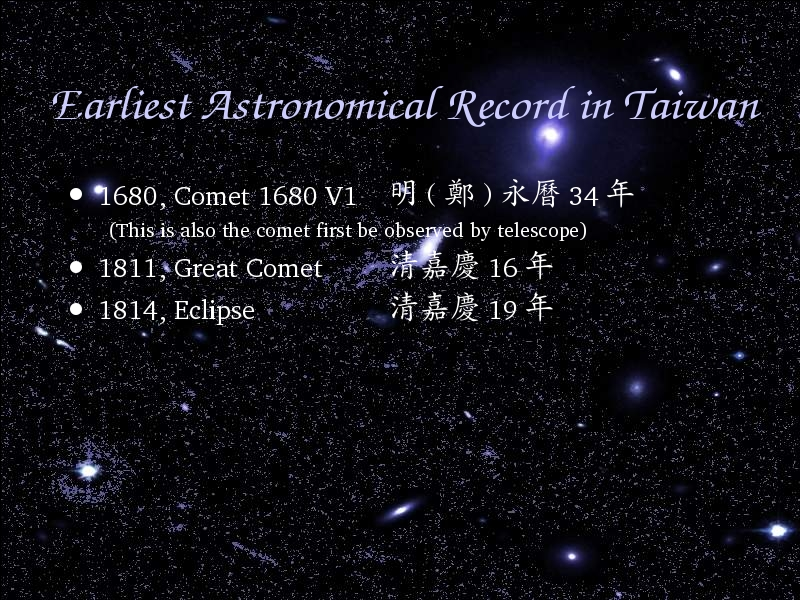

Voice Over:
Here I want to inform you that from the Astronomical Chronology of Taiwan.
What surprised me is, the earliest astronomical record in Taiwan is in 1680.
Prof. Yuan, Chi and Prof. Lee, Typhoon kindly inform me again here.
Although in Mainland China, Ming Dynasty has already been replaced by Ching Dynasty, but in Taiwan, it was still Ming Dynasty because Zheng, Cheng-Kung came to Taiwan.